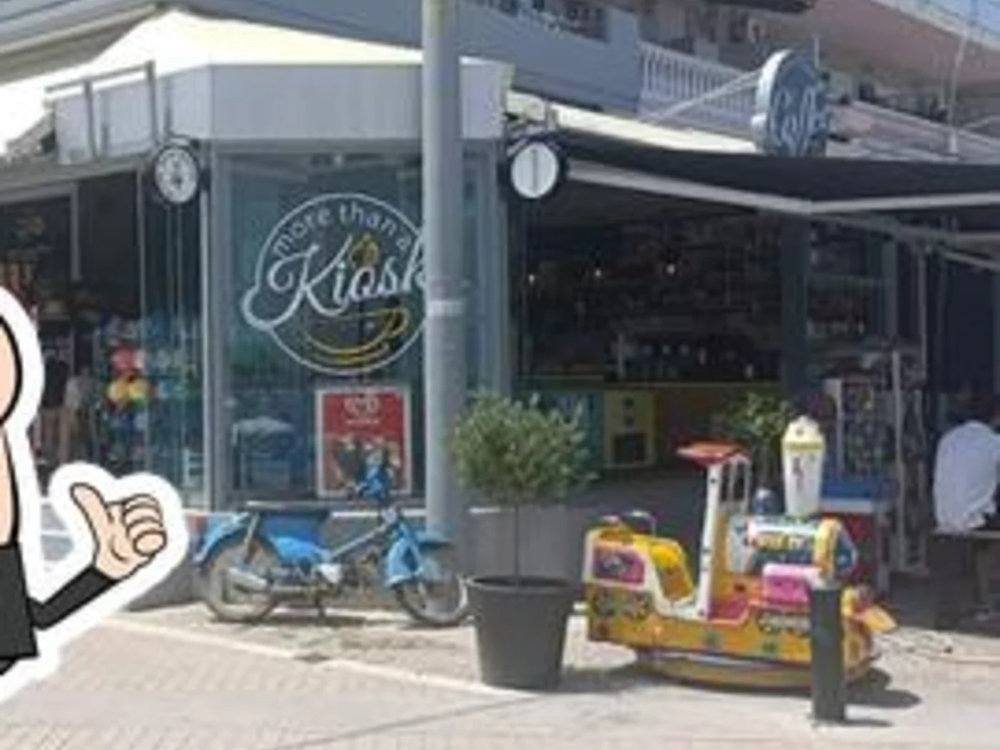
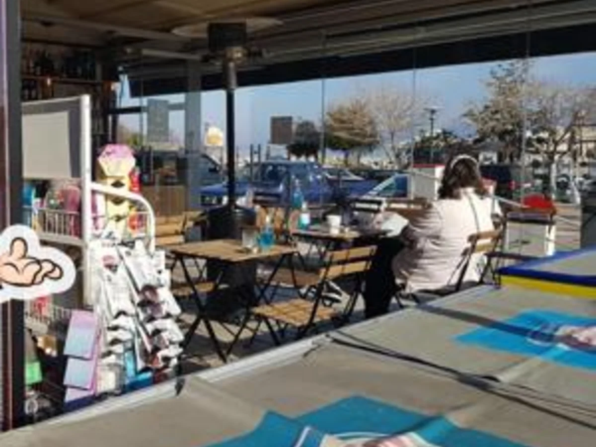
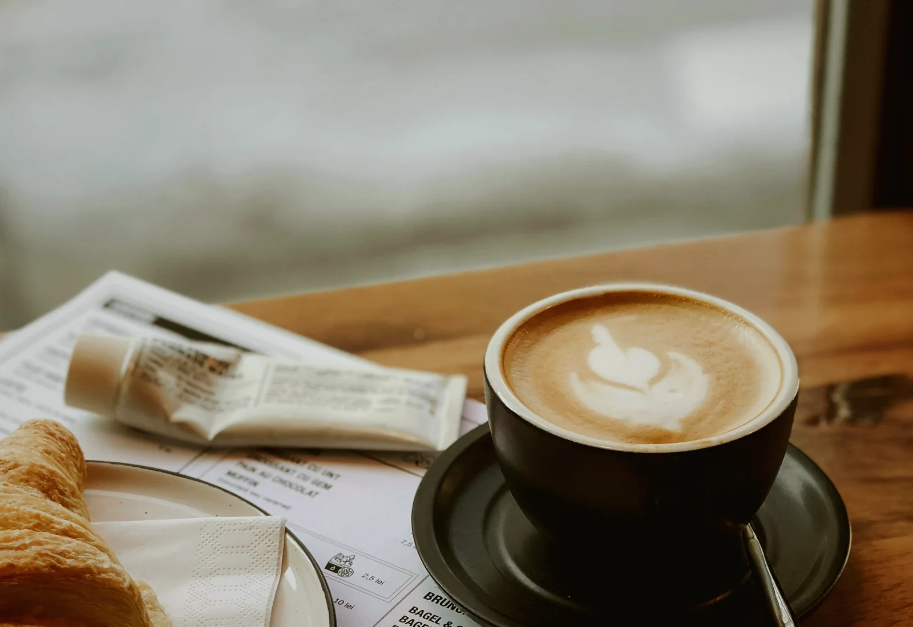
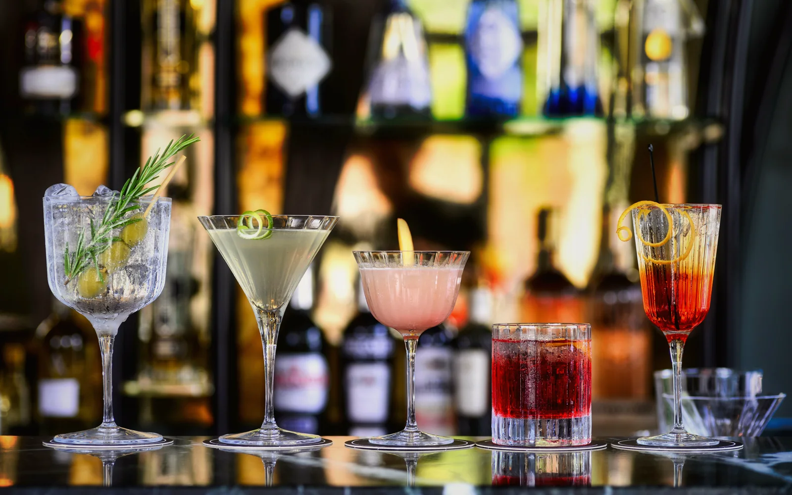
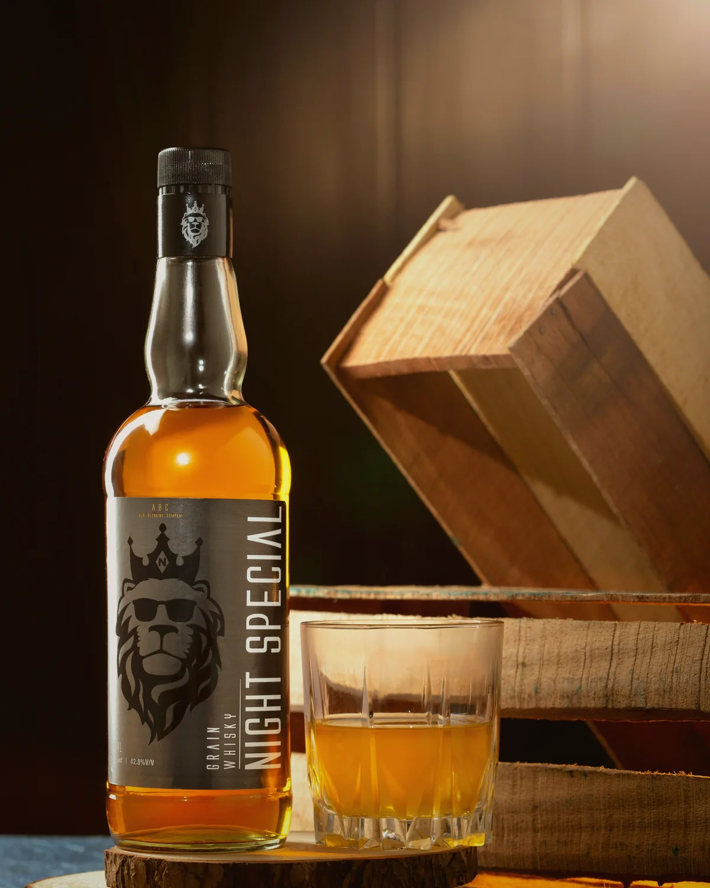

Ποσειδώνος 13 · Χαλκούτσι
Περισσότερο από περίπτεροMore Than
a Kiosk
Ο καθημερινός σου σταθμός για καφέ, κρύα ροφήματα, snacks και όλα τα απαραίτητα — από νωρίς το πρωί μέχρι αργά.




Coffee& more
More than the everyday stop
Καφές, χαμόγελο και ό,τι χρειάζεσαι.
Ένας φωτεινός και φιλικός χώρος που ενώνει την ευκολία του περιπτέρου με την απόλαυση ενός καλού καφέ. Πέρνα για το πρωινό σου espresso, ένα γρήγορο snack, παγωμένο ρόφημα ή τις καθημερινές σου αγορές.
Από νωρίςΚαφές και εξυπηρέτηση από τις 06:00.
Μεγάλη ποικιλίαΡοφήματα, snacks, παγωτά και προϊόντα περιπτέρου.
Στο χέρι ή στον χώροTake away, delivery και εξωτερικό καθιστικό.
Επίσημος κατάλογος
Από τον πρώτο καφέ μέχρι το τελευταίο cocktail.
Δες όλες τις επιλογές και τις τιμές από τον επίσημο κατάλογο του More Than Coffee.

01
Καφέδες & ροφήματα
Espresso, freddo, σοκολάτες, λεμονάδες, milkshakes και γρανίτες.

02
Classic & signature cocktails
Από Mojito και Paloma μέχρι Chalkoutsi Sunset.

03
Spirits & bottle service
Rum, vodka, gin, tequila, liqueurs και whisky.

04
Μπύρες & αναψυκτικά
Μπύρες, RTDs, energy drinks, αναψυκτικά και νερά.
Φωτογραφίες
Μια ματιά στο More Than a Kiosk.
Ο χώρος, ο καφές και η μεγάλη ποικιλία που θα συναντήσεις στο κατάστημα.
Επικοινωνία
Σε περιμένουμε στο Χαλκούτσι.
ΔιεύθυνσηΠοσειδώνος 13, Χαλκούτσι, Αττική
Τηλέφωνο22950 71211
ΩράριοΚυρ–Πεμ 06:00–01:00
Παρ–Σαβ 06:00–01:30
Παρ–Σαβ 06:00–01:30
Your everyday stop